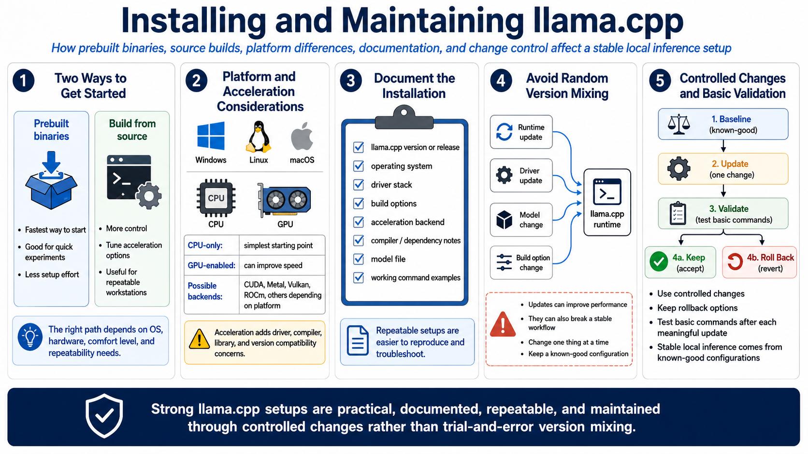

Installation and Build Options
Connecting to LMS... Progress: in progress

Narration
llama.cpp can often be used through prebuilt binaries or built from source at a high level. Prebuilt binaries are convenient for getting started quickly. Building from source can provide more control over acceleration options, platform support, and compiler settings. The right path depends on operating system, hardware, comfort level, and whether the system is a short experiment or a repeatable AI workstation.
Windows, Linux, and macOS each have their own considerations. CPU-only builds are usually the simplest starting point. GPU-enabled builds may use acceleration paths such as CUDA, Metal, Vulkan, ROCm, or other backend options depending on platform and hardware. Those paths can improve performance, but they also introduce driver, compiler, library, and version compatibility concerns.
Installation should be documented and repeatable. Record the llama.cpp version or release, operating system, driver stack, build options, acceleration backend, compiler or dependency notes, model file, and working command examples. This is especially important when a setup supports real workflows or when you expect to reproduce it on another machine.
Avoid random version mixing without a rollback plan. A runtime update, driver update, model change, or new build option can improve performance, but it can also break a previously stable workflow. Stable local inference comes from controlled changes, known-good configurations, and basic validation after each meaningful update.